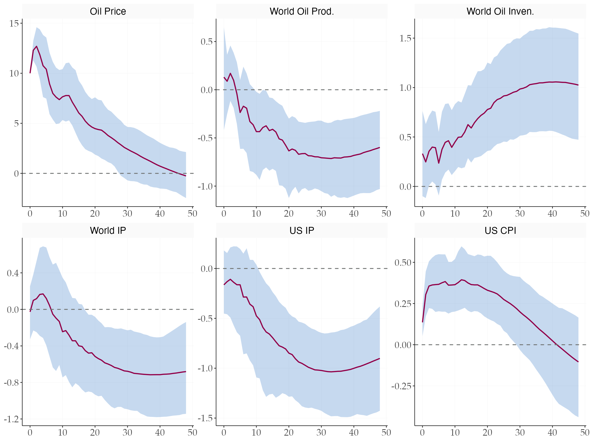
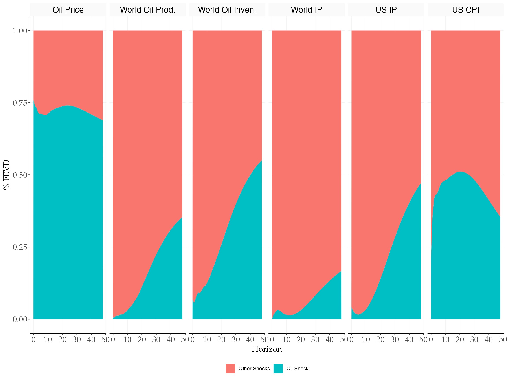
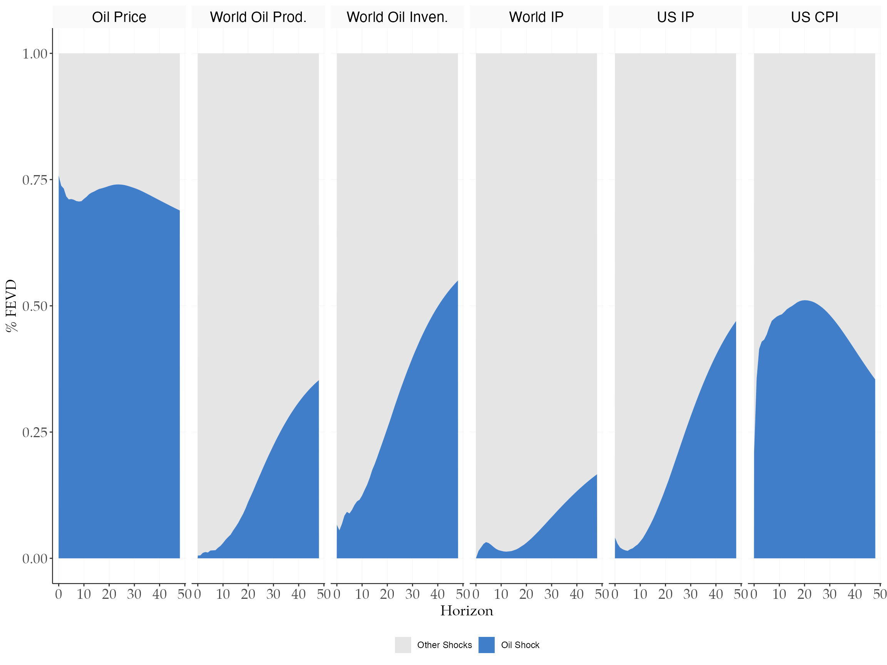
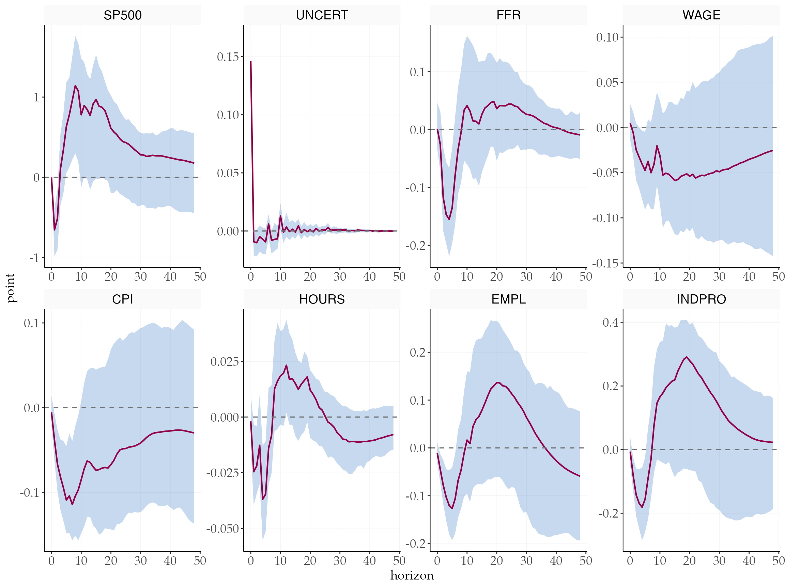
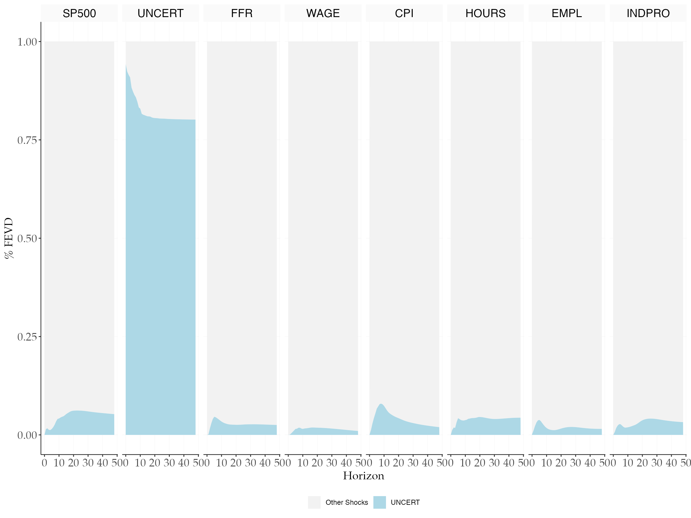
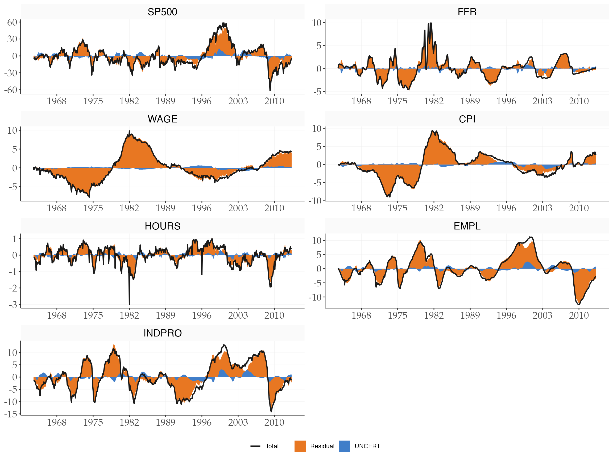
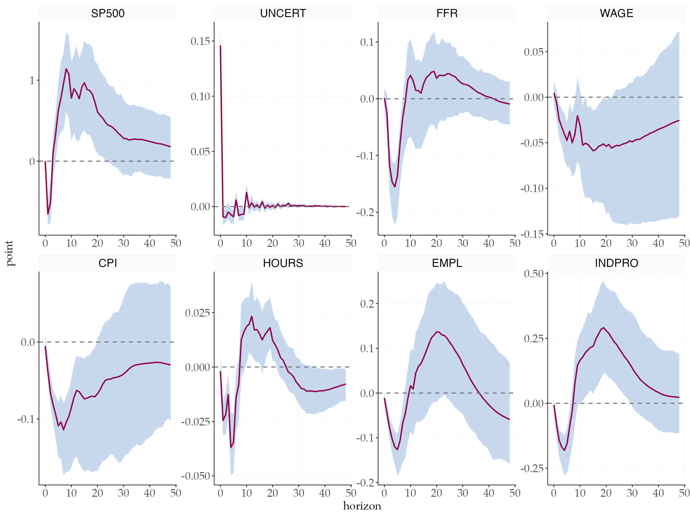

tidyMacro

tidyMacro is an R package for fast estimation of Vector
Autoregression (VAR) models via C++ (Rcpp/RcppArmadillo). Here is what
it does: (will be updated as I extend functionality of the package).
- Fast VAR & VARX reduced form estimations
- Zero dependency on other packages. Ground up written in C++. All visualizations made with ggplot2 in R.
- Identification via external instruments (most popular) and classical recursive methods
- Impulse Response Functions with bootstrap confidence bands (moving blocks, residual, wild)
- Bias-corrected bootstraps (Pope correction)
- Forecast Error Variance Decomposition (FEVD)
- Historical Decomposition
- Publication-ready plots out of the box. Each plot is a #ggplot2 object, can be ex post customized
- Parallel bootstrap computations via #OpenMP for maximum speed
- Excellent documentation with detailed examples for every function
Installation
# Install from GitHub
devtools::install_github("muhsinciftci/tidyMacro")Replication 1: @känzig2021 — Oil
Supply News Shocks via External Instruments
library(tidyMacro)
library(tidyverse)
#> ── Attaching core tidyverse packages ──────────────────────── tidyverse 2.0.0 ──
#> ✔ dplyr 1.2.0 ✔ readr 2.1.5
#> ✔ forcats 1.0.0 ✔ stringr 1.6.0
#> ✔ ggplot2 4.0.2 ✔ tibble 3.3.1
#> ✔ lubridate 1.9.4 ✔ tidyr 1.3.2
#> ✔ purrr 1.2.1
#> ── Conflicts ────────────────────────────────────────── tidyverse_conflicts() ──
#> ✖ dplyr::filter() masks stats::filter()
#> ✖ dplyr::lag() masks stats::lag()
#> ℹ Use the conflicted package (<http://conflicted.r-lib.org/>) to force all conflicts to become errors
library(tictoc)
library(patchwork)
set_tidyMacro_theme()
#> tidyMacro theme and color scales set as default for this session.
# Load data
data("kaenzig_data")
kaenzig_data |> head()
#> # A tibble: 6 × 8
#> date Oil_Price World_Oil_Prod World_Oil_Inven World_IP US_IP
#> <dttm> <dbl> <dbl> <dbl> <dbl> <dbl>
#> 1 1974-01-01 00:00:00 307. 1092. 628. 379. 385.
#> 2 1974-02-01 00:00:00 306. 1093. 632. 378. 385.
#> 3 1974-03-01 00:00:00 305. 1094. 631. 378. 385.
#> 4 1974-04-01 00:00:00 305. 1095. 634. 378. 385.
#> 5 1974-05-01 00:00:00 304. 1096. 638. 379. 385.
#> 6 1974-06-01 00:00:00 303. 1095. 640. 378. 385.
#> # ℹ 2 more variables: US_CPI <dbl>, iv_kanzig_final <dbl>
# Pass data as matrix
finaldata <- kaenzig_data |>
select(Oil_Price, World_Oil_Prod, World_Oil_Inven, World_IP, US_IP, US_CPI) |>
as.matrix()
iv_oil <- kaenzig_data |>
select(iv_kanzig_final) |>
drop_na() |>
as.matrix()
varnames <- c(
"Oil Price",
"World Oil Prod.",
"World Oil Inven.",
"World IP",
"US IP",
"US CPI"
)
shockname <- "Oil Shock"
# Estimate VAR
T <- nrow(finaldata)
N <- ncol(finaldata)
c <- 1
p <- 12
var_result <- fVAR(finaldata, p, c)
residuals <- var_result$residuals
sigma_full <- var_result$sigma_full
# Wold IRFs
hor <- 48
wold <- fwoldIRF(fVAR = var_result, horizon = hor)
# I use 100 bootstraps here for replications but you should use 1000 or so
nboots <- 100
# Moving block bootstrap
result_mbb <- fbootstrapIV_mbb(
y = finaldata,
var_result = var_result,
Z = iv_oil,
nboot = nboots,
blocksize = 0, # 0 means Automatic selection
adjustZ = c(1, 417),
adjustu = c(100, 516),
policyvar = 1,
horizon = hor,
prc = 90
)
#> Using 3 thread(s) for parallel bootstrap computation...
# Plot IRFs
fplotirf_iv(
point = result_mbb$meanirf * 10,
upper = result_mbb$upper * 10,
lower = result_mbb$lower * 10,
varnames = varnames,
shockname = shockname,
prc = 90,
facet_ncol = 3
) +
labs(x = NULL, y = NULL)
The package calculates many intermediate steps. However, One can
manually calculate IV steps as in the original paper:
# IV identification
u_p <- residuals[, 1]
u_p_final <- u_p[(length(u_p) - length(iv_oil) + 1):length(u_p)] |> as.matrix()
u_q_final <- residuals[
(nrow(residuals) - length(iv_oil) + 1):nrow(residuals),
2:ncol(residuals)
] |>
as.matrix()
u <- residuals[(nrow(residuals) - length(iv_oil) + 1):nrow(residuals), ]
T1 <- nrow(u)
sigma <- (t(u) %*% u) / (T1 - 1 - p - N * p)
S <- t(chol(sigma))
ols_result1 <- fOLS(y = u_p_final, X = iv_oil, 0)
uhat <- ols_result1$fitted_partial
sq_sp <- solve(t(uhat) %*% uhat) %*% t(uhat) %*% u_q_final
s <- c(1, sq_sp[1], sq_sp[2], sq_sp[3], sq_sp[4], sq_sp[5])
# Structural IRFs
ivirf <- matrix(0, nrow = N, ncol = hor + 1)
for (h in 1:(hor + 1)) {
ivirf[, h] <- wold[,, h] %*% s
}FEVD
# FEVD
fevd_result <- fevd_iv(s, S, wold, N, hor, sigma, u, T1 = T1, p = p)
fplot_vardec(
fevd = fevd_result$fevd_iv,
varnames = varnames,
shocknames = shockname
)
Again the same:
# FEVD scaled to unit variance (Känzig approach)
scaler <- s / norm(solve(S) %*% s, type = "2")
ivirf_scaled <- matrix(0, nrow = N, ncol = hor + 1)
for (h in 1:(hor + 1)) {
ivirf_scaled[, h] <- wold[,, h] %*% scaler
}
temp <- matrix(0, nrow = N, ncol = N)
denom <- matrix(0, nrow = N, ncol = hor + 1)
for (h in 1:(hor + 1)) {
temp <- temp + wold[,, h] %*% sigma %*% t(wold[,, h])
denom[, h] <- diag(temp)
}
irf_sq <- ivirf_scaled^2
num <- t(apply(irf_sq, 1, cumsum))
fevd_iv <- num / denom
fplot_vardec(
fevd = fevd_iv,
varnames = varnames,
shocknames = shockname
) +
scale_fill_manual(values = tidyMacro_colors[c(2, 3)])
Replication 2: Bloom (2009) — Uncertainty Shocks via
Cholesky Ordering
library(tidyMacro)
library(tidyverse)
# Load data
data("bloom2009")
df0 <- bloom2009
dates_vec <- df0 |> pull(Date)
y <- df0 |> select(-Date) |> as.matrix()
# Estimate VAR
p <- 12
c <- 1
var_bloom <- fVAR(y, p, c)
sigma <- var_bloom$sigma_full
S <- t(chol(sigma))
horizon <- 48
wold <- fwoldIRF(fVAR = var_bloom, horizon = horizon)
point_irf <- fcholeskyIRF(wold, S)
# Bootstrap confidence bands
prc <- 68
bloom_chol <- fbootstrapChol(
y = y,
var_result = var_bloom,
nboot = nboots,
horizon = 48,
prc = 90,
bootscheme = "residual"
)Impulse responses
# Plot IRF
shockname <- "UNCERT"
var_names <- colnames(y)
shock <- match(shockname, var_names)
fplotirf_chol(
point_irf,
bloom_chol$upper,
bloom_chol$lower,
shock = shock,
varnames = var_names,
prc = 68,
facet_ncol = 4
) +
ftheme_tidyMacro()
FEVD
# FEVD
vardec <- fevd_chol(point_irf, shock = shock)
fplot_vardec(
fevd = vardec$fevd,
varnames = var_names,
shocknames = var_names[shock]
) +
ftheme_tidyMacro() +
scale_fill_manual(values = c("gray95", "lightblue"))
Historical Decomposition
series <- setdiff(seq_len(ncol(y)), shock)
histdec_list <- setNames(
lapply(series, function(i) fhistdec(y, var_bloom, S, i)$histdec),
colnames(y)[series]
)
fplot_histdec(
histdec_list = histdec_list,
shock = shock,
shockname = shockname,
dates = dates_vec,
p = p,
facet_ncol = 2,
return_data = FALSE
) +
scale_x_datetime(date_breaks = "7 years", date_labels = "%Y") +
ftheme_tidyMacro()
Bias Corrected Impulse responses
# Bias-corrected Bootstrap
nboot1 <- 1000
nboot2 <- 2000
tic()
result_corrected <- fbootstrapCholCorrected(
y = y,
var_result = var_bloom,
nboot1 = nboots,
nboot2 = nboots,
horizon = 48,
prc = prc,
bootscheme = "residual"
)
toc()
#> 3.995 sec elapsed
fplotirf_chol(
point_irf,
result_corrected$upper,
result_corrected$lower,
shock = shock,
varnames = var_names,
prc = prc,
facet_ncol = 4
) +
ftheme_tidyMacro()